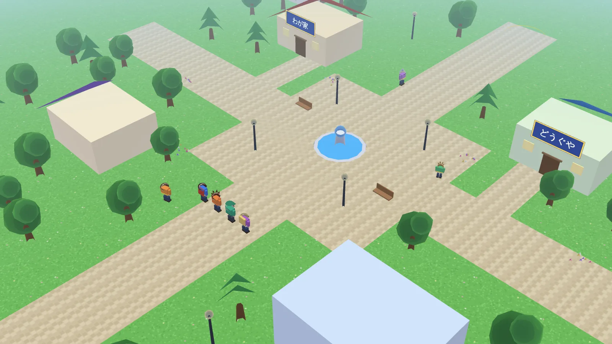
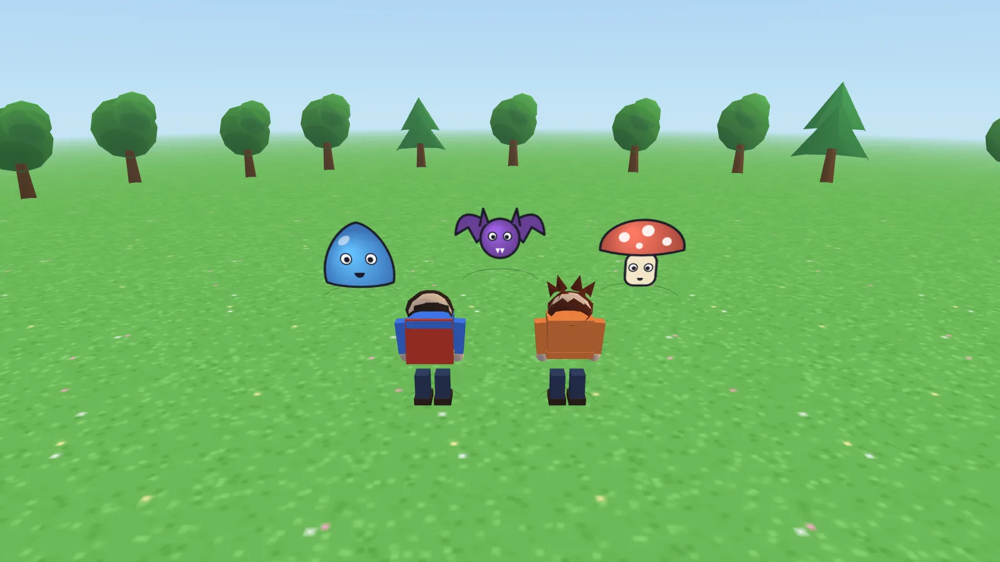

ARE QUEST 2 〜AREを入手せよ〜 手順書（試作版）
▶ ゲームにもどる


1. 操作（パソコン：キーボード）
| うごく | WASD または 矢印キー |
|---|
| 走る | Shift を押しながら移動 |
|---|
| 話す・調べる・決定 | Space / Enter / F（人に近づくと「話す」の表示が出ます） |
|---|
| 戻る・キャンセル | X / Backspace / Esc ※会話中に押すと、その会話をスキップします |
|---|
| メニュー | Esc / Tab / M / I（つよさ・どうぐ・セーブ・せってい） |
|---|
| オート会話 | V（ONの間は画面上部に「AUTO」が出て、会話ボックスの下に進行バーが伸びます） |
|---|
| カメラ | Q / E、またはマウスでドラッグ |
|---|
| 戦闘 | ↑↓（W/S）で選び、Spaceで決定。「おまかせ」で自動戦闘（X / Esc で解除） |
|---|
2. 操作（Proコントローラー・ゲームパッド）
パソコンにUSBまたはBluetoothでつなぎ、ゲーム画面を開いたあとにどれかのボタンを1回押すと認識されます（ブラウザの仕様です）。
| うごく | 左スティック / 十字キー |
|---|
| 決定・話す | Aボタン（Switch Proコン：右のボタン） |
|---|
| 戻る・スキップ | Bボタン（下のボタン）／ 押しながら移動で走る |
|---|
| メニュー | ＋ または Xボタン |
|---|
| オート会話 | Yボタン または − |
|---|
| カメラ | L / R / ZL / ZR / 右スティック |
|---|
Xbox・PlayStation系のコントローラーは自動判別し、「下のボタン＝決定」「右のボタン＝戻る」の配置になります。
3. 操作（スマホ・タブレット）
- 左下の丸いスティックで移動、右下の「A」で話す・決定、「☰」でメニュー、「⟲」でカメラ回転（画面ドラッグでも回せます）。
- 文字ボックスは、タップで次へ。「▶ オート」「⏭ スキップ」ボタンもあります。
- スマホは横向きがおすすめです（縦でも遊べます）。
4. セーブ
- 話をクリアしたとき、会話のあと、メニューを開いたあと等に自動で保存されます（タイトルの「つづきから」→「オートセーブ」）。
- メニュー→セーブ で、スロット1〜3に手動セーブできます（セーブ音が鳴ります）。
- セーブはその端末・そのブラウザの中だけに保存されます。ブラウザのデータ消去、別の端末、プライベートモードでは引き継げません。
5. 音（BGM・効果音）
BGMはAREQUESTの13曲をすべて使っています。場所と状況で切り替わります（メニュー→せってい で ON/OFF・音量）。
| タイトル | opening |
|---|
| 町・ゲーム通り | town |
|---|
| はらっぱ | field |
|---|
| お店の中 | cave |
|---|
| 通常戦闘 / ボス戦 | mainbattle / midboss（最終盤のボスは lastboss、「行列のぬし」は secretboss） |
|---|
| 第13〜15話の外 / 第19〜22話 / 第23〜26話 | sea / castle / demoncastle |
|---|
| セーブ / 最終話クリア後 | save（1回）/ ending |
|---|
ブラウザの仕様で、画面を1回クリック（タップ）するまで音は出ません。タイトルの「はじめから」を押した時点で鳴り始めます。スマホは消音（マナーモード）だと鳴らないことがあります。
6. 困ったとき
| お店の中で動けない | メニュー→「そとへ でる（こまったとき）」で外に出られます。 |
|---|
| 画面が真っ暗・3Dが出ない | ブラウザを最新にして、Chrome / Edge / Safari で開いてください（WebGL2が必要です）。 |
|---|
| 動きが重い | メニュー→せってい→「かいぞうど」を「ひくい」に。 |
|---|
| コントローラーが反応しない | ゲーム画面をクリックしてから、コントローラーのボタンを1回押してください。 |
|---|
| 更新したのに古いまま | Ctrl+Shift+R（スマホはブラウザのキャッシュ削除）。 |
|---|
7. GitHub Pagesへの公開手順（無料）
- ZIPを展開し、できた
game2 フォルダの中身すべて（index.html・js・data・bgm・img・manual.html）を、リポジトリ ARE の game2 フォルダにアップロードします（GitHubの画面から「Add file → Upload files」でフォルダごとドラッグ）。
- すでにPagesが有効なら、数分後に
https://（ユーザー名）.github.io/ARE/game2/ で遊べます。
- 有効でない場合：リポジトリの Settings → Pages → Branch を
main（/root）にして Save。
- 音楽ファイル（bgm フォルダ）は合計約50MBです。リポジトリ全体は1GB以内に収めてください（無料枠の目安）。
8. 町の施設
- どうぐや：やくそう・せいやく・せいすい・ふっかつの はねを買えます。「そざいを うる」で、戦闘で手に入れた素材も売れます。
- わが家：おかあさんに話しかけて「やすむ」と、HP・MPが全回復し、オートセーブされます。
- 職業所：Lv10から転職できます。職業レベルが上がるとじゅもん・とくぎを覚え、30でマスター。転職すると成長ボーナスが半分になり、マスターした職業ごとに全能力が+1.5%。「ARE使い」はマスター3つ、「天才」はマスター8つで解放。★は新職業です（農家・釣り人・ゲームクリエイター・忍者・建築士・宇宙飛行士・お医者さん）。
- ぼくじょう：スカウトしたモンスターを30わくまで預かります（大型は2わく）。「あいぼう」にすると戦闘に一緒に出ます。
・はいごう：「はいごうの しずく」を使い、2ひきから新しいモンスターを生みます（レベルは下がるが「プラス」が貯まる）。
・てんせい：元のモンスターを5回倒すと、光の姿へ転生できます（レベルは半分）。
- 格闘場：あいぼうを選んでランク（G〜S）を決め、3連戦（自動）。優勝するとゴールド・コイン・経験値。Sランク優勝で称号。
- カジノ：ゴールド（1コイン＝5G）でコインを交換。景品交換所では装備・しずく・スカウトぶえなどと交換できます。
- 室内は、出口側（画面の手前の壁ぎわ）に近づくと外に出られます。
9. 戦闘（ドラクエ5ふう）
- 戦闘に入る前に、画面が切り替わるアニメーションが入ります。
- コマンドは たたかう／さくせん／にげる／どうぐ。「たたかう」を選ぶと 「めいれいさせろ」 か 「おまかせ」。「めいれいさせろ」では仲間ひとりずつ こうげき／じゅもん／とくぎ／ぼうぎょ／どうぐ を選びます。選択中のコマンドは一段持ち上がって表示されます。
- 武器で攻撃すると、キャラクターが敵に踏み込んで斬りつけ、ダメージ数字が出て敵がのけぞります。
- 敵はすべて3Dポリゴンです。ほのお・こおり・かみなり・かいふくなど、わざごとに専用の演出が出ます。
- 倒した敵がスカウトに成功すると仲間になります（ランクが低いほど成功しやすい。スカウトぶえでアップ）。
- メニューの「じゅもん」でフィールドからでも回復呪文が使えます。「ずかん」でモンスター図鑑が見られます。
10. カジノのゲーム（6種）
- アイテム神経衰弱：同じ絵柄を揃える。早いほどコインが多い。
- 友披露：トランプの4人対戦（同じ数を、場より強く出して先に上がる）。順位でコイン。
- タイピングチャレンジ：出てきた言葉をローマ字で入力（スマホは画面タップでキーボード）。
- AREの達人：落ちてくる丸を「ドン／カッ」に合わせて叩くリズムゲーム。
- すべてキーボード・ゲームパッド・タッチで遊べます。Escで途中でやめられます（コインは入りません）。
11. ドリーム・フロンティア（3Dテーマパーク）
町の「ドリーム・フロンティア入口」から入ります。dream-frontier/ フォルダを game2/ と同じ階層（例：ARE/game2/ と ARE/dream-frontier/）に置くと、本格版の3Dテーマパーク（14のアトラクション・スタンプラリー）が開きます。見つからない時は、内蔵のミニパークが開きます。
- スタンプを1つ集めるたびに コイン10まい／14こ全部で コイン300・500G・称号「ドリーム全制覇者」（1回だけ）。
- 右下の「✕ まちへ もどる」で いつでも もどれます。
くわしい 説明・公開方法は dream-frontier/README.md を見てください。
12. ストーリーの順番
「はじめから」で始めると、前日譚（2025年6月・全8話）→ 本編（第1〜30話）→ 後日譚（2035年・全4話）の順に進みます。
- 前日譚：アキ・ケン・ミオと過ごした、AREを知るまでの6月。
- 本編：発売日を目指す、これまでの30話。ラストのあだ名は「店人公（てんじんこう）」＝主人公＋店頭販売。
- 後日譚：ARE発売から十年後の2035年。あの日の約束のその先へ。
13. このバージョンについて
ARE QUEST 2 の「中身を増やす」版です。呪文・特技・モンスター・職業・スカウト・転生・格闘場・カジノを追加しました（内容は元ゲームを少し変更し、新職業・新モンスターを約3割追加）。虫のモンスターは登場しません。ゲームの描画は自作のWebGL2のみで、外部ライブラリは使っていません。